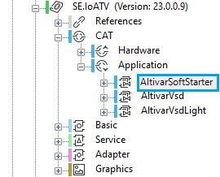
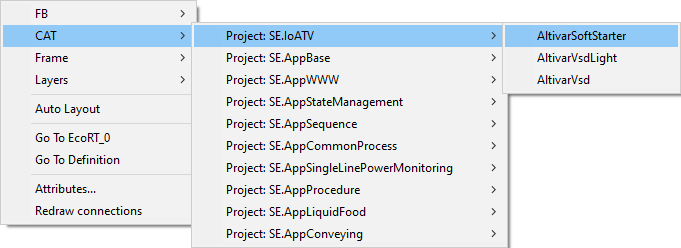
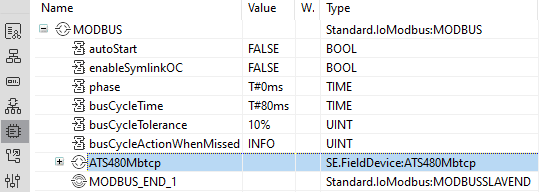
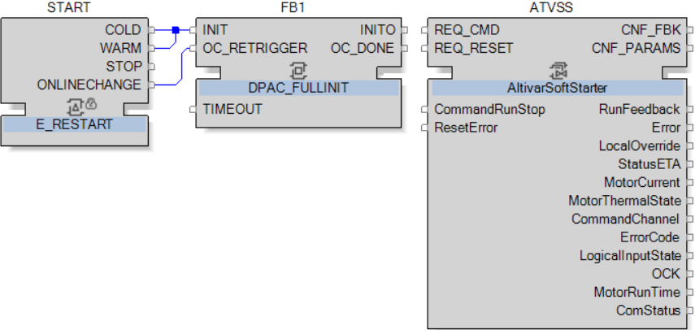
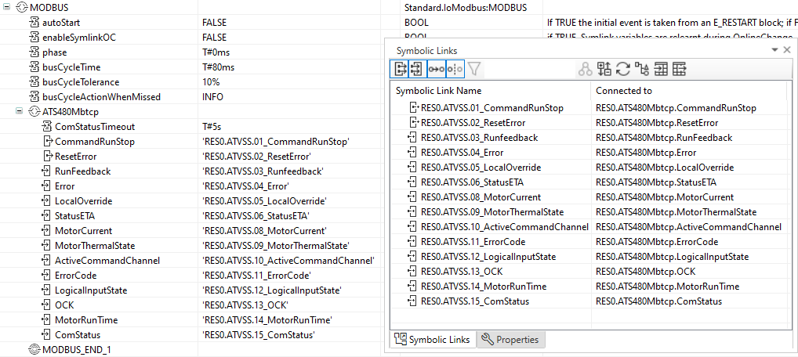
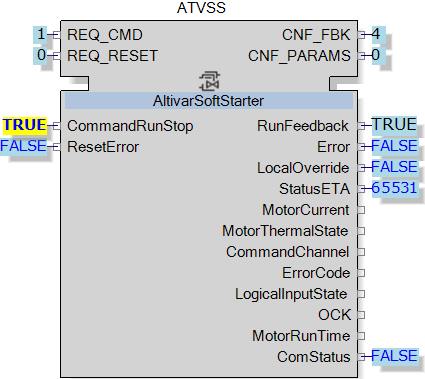

AltivarSoftStarter Integration
The following table describes the steps to integrate the AltivarSoftStarter Application CAT to the solution, this function block will be used with ATS480Mbtcp:
|
Step |
Action |
Comment |
|---|---|---|
|
1 |
AltivarSoftStarteris available under |
The following figure illustrates the step: 
NOTE: This application CAT can be used with ATS480Mbtcp and ATS480Eip, available in SE.FieldDevice Library.
|
|
2 |
Add the AltivarSoftStarterCAT to the function blocks Network. |
The following figure illustrates this step:  |
| 3 |
Add an ATS480Mbtcp Hardware CAT under a MODBUS in the Hardware Configuration. |
The following figure illustrates this step:  |
|
4 |
|
The following figure illustrates the step: 
NOTE: You don’t need to link Events and Data Inputs to the applicationCAT, because it is done internally.
|
|
5 |
Open the Hardware Configuration and connect the Symbolic Links to the ATS480Mbtcp Hardware CAT. |
The following figure illustrates the step:  Note: it is possible to use Ctrl + Click to select multiple Symbolic Links, then drag and drop them at once. |
|
6 |
Open the deploy and diagnostic editor to Login and deploy to run the motor with the AltivarSoftStarter application CAT. |
The following figure illustrates the step: 
|
|
7 |
In the application mode:
Result: The status of RunFeedback will be True, confirming that the motor is running. |
The following figure illustrates the step:  |